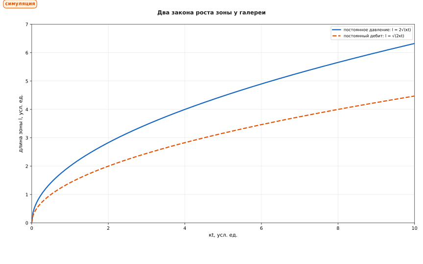

Стр. 497 · §1. Метод последовательной смены стационарных состояний
Задача решается аналогично предыдущему случаю с той лишь разницей, что в уравнение для упругого запаса жидкости (24.2) нужно подставить выражения
Неустановившееся движение упругой жидкости в упругом пласте. Метод ПСССШаг 52 из 60
В книге: «Метод последовательной смены стационарных состояний» стр. 497
Опирается на: шаг 51 «Постоянное давление на галерее» (предпосылка), шаг 48 «Отбор равен убыли упругого запаса» (предпосылка), шаг 13 «Как работает уравнение пьезопроводности» (предпосылка)
При постоянном давлении на галерее длина возмущённой зоны растёт по закону l(t) = 2√(κt).
Вывод тот же: баланс упругого запаса, но с переменным дебитом.
Рост по-прежнему корневой, однако формула отличается от случая постоянного дебита.
Пороговая идея. Разобрать, какие множители постоянны и почему дебит остаётся переменным. модель
Автор решает задачу так же, как в случае постоянного дебита. Разница одна: в баланс упругого запаса (24.2) подставляют выражения нового режима. стр. 497
«Задача решается аналогично предыдущему случаю с той лишь разницей, что в уравнение для упругого запаса жидкости (24.2) нужно подставить выражения»
Объём зоны прежний: V(t) = Bh·l(t). Среднее падение давления равно половине депрессии: Δp = (pк − pг)/2. Здесь депрессия задана и постоянна. стр. 497
«$$V(t) = B h l(t),$$»
«$$\Delta p = p_\kappa - \bar{p} = p_\kappa - \frac{p_\kappa + p_\tau}{2} = \frac{p_\kappa - p_\tau}{2},$$»
Дебит теперь не задан. Он равен Q(t) = k(pк − pг)Bh/(μl(t)). При фиксированной депрессии дебит убывает обратно пропорционально длине зоны. стр. 497
«$$Q(t) = \frac{k(p_\kappa - p_\tau)}{\mu l(t)} Bh.$$»
Слева в балансе стоит мгновенный отбор Q(t)·dt. Справа — изменение упругого запаса β*·d[Bhl·(pк − pг)/2]. В правой части меняется только длина зоны l. стр. 497
«$$\frac{k(p_\kappa - p_\tau)}{\mu l(t)} Bh dt = \beta^* d \left[ Bhl \frac{p_\kappa - p_\tau}{2} \right].$$»
Автор проводит арифметические преобразования и интегрирует баланс. Получается закон движения границы: l(t) = 2√(κt). стр. 497
«Проведя арифметические преобразования в этом соотношении, и выполнив интегрирование, найдем закон движения границы возмущенной области»
«$$l(t) = 2\sqrt{\kappa t}.$$»

Корневая зависимость от времени сохраняется. Но формула длины другая, чем при постоянном дебите: там было √(2κt). Закон выведен для постоянного перепада и прямолинейной геометрии. стр. 497
Как найти длину зоны при постоянной депрессии
Геометрический объём зоны. стр. 497
| Обозначение | Что это | Единицы |
|---|---|---|
| $V$ | объём возмущённой зоны пласта | м³ |
| $t$ | время с начала отбора; dt — его малое приращение | с |
| $B$ | ширина пласта | м |
| $h$ | толщина пласта | м |
| $l$ | расстояние от галереи до границы возмущения | м |
Средняя депрессия для линейного профиля. стр. 497
| Обозначение | Что это | Единицы |
|---|---|---|
| $\Delta p$ | среднее снижение давления в возмущённой области | Па |
| $p_\kappa$ | начальное давление в пласте и давление на границе возмущения | Па |
| $p_\tau$ | давление на галерее; обозначение как в исходной формуле | Па |
| $\bar p$ | среднее давление в возмущённой области | Па |
Мгновенный дебит при заданных краевых давлениях. стр. 497
| Обозначение | Что это | Единицы |
|---|---|---|
| $Q$ | объёмный дебит жидкости | м³/с |
| $t$ | время с начала отбора; dt — его малое приращение | с |
| $k$ | проницаемость пласта | м² |
| $p_\kappa$ | начальное давление в пласте и давление на границе возмущения | Па |
| $p_\tau$ | давление на галерее; обозначение как в исходной формуле | Па |
| $\mu$ | динамическая вязкость жидкости | Па·с |
| $l$ | расстояние от галереи до границы возмущения | м |
| $B$ | ширина пласта | м |
| $h$ | толщина пласта | м |
Материальный баланс в случае постоянной депрессии. стр. 497
| Обозначение | Что это | Единицы |
|---|---|---|
| $k$ | проницаемость пласта | м² |
| $p_\kappa$ | начальное давление в пласте и давление на границе возмущения | Па |
| $p_\tau$ | давление на галерее; обозначение как в исходной формуле | Па |
| $\mu$ | динамическая вязкость жидкости | Па·с |
| $l$ | расстояние от галереи до границы возмущения | м |
| $t$ | время с начала отбора; dt — его малое приращение | с |
| $B$ | ширина пласта | м |
| $h$ | толщина пласта | м |
| $\beta^*$ | коэффициент упругоёмкости пласта | Па⁻¹ |
Длина зоны в режиме постоянного давления. стр. 497
| Обозначение | Что это | Единицы |
|---|---|---|
| $l$ | расстояние от галереи до границы возмущения | м |
| $t$ | время с начала отбора; dt — его малое приращение | с |
| $\kappa$ | коэффициент пьезопроводности | м²/с |
Для расчёта «Постоянная депрессия: как баланс даёт длину зоны» отделите исходные параметры от модельных выходов.
Общий модуль баланса с другой подстановкой входов.
Где аналогия перестаёт работать: Результат зависит от физического граничного условия.
Добавьте разные тесты решения для режимов постоянного давления и дебита.
Расставьте шаги вывода длины зоны по порядку.
Перетащите пункты (мышью или пальцем за ⠿) или двигайте кнопками ↑ ↓.
Верный ответ: Подставьте объём и постоянную среднюю депрессию в правую часть баланса. → Подставьте мгновенный дебит в левую часть. → Сократите постоянные множители и проинтегрируйте баланс. → Запишите результат: l(t) = 2√(κt).
Сначала заполняют обе части баланса, затем интегрируют. Где это в тексте (стр. 497) →
Заполните пропуски о дебите при постоянной депрессии.
Дебит теперь не . При фиксированной депрессии дебит убывает обратно пропорционально зоны.
Верный ответ: Дебит теперь не [задан]. При фиксированной депрессии дебит убывает обратно пропорционально [длине] зоны.
Q(t) = k(pк − pг)Bh/(μl(t)): l(t) в знаменателе. Где это в тексте (стр. 497) →
Все утверждения шага с дословной цитатой автора и страницей книги (по PDF).
Вычисление повторяет предыдущий подход, но в (24.2) подставляют выражения для нового режима. вывод
«Задача решается аналогично предыдущему случаю с той лишь разницей, что в уравнение для упругого запаса жидкости (24.2) нужно подставить выражения»
Объём возмущённой зоны остаётся произведением ширины, толщины и длины. вывод
«$$V(t) = B h l(t),$$»
Среднее падение равно половине постоянной депрессии на галерее. вывод
«$$\Delta p = p_\kappa - \bar{p} = p_\kappa - \frac{p_\kappa + p_\tau}{2} = \frac{p_\kappa - p_\tau}{2},$$»
Дебит при фиксированной депрессии меняется обратно пропорционально длине возмущённой зоны. вывод
«$$Q(t) = \frac{k(p_\kappa - p_\tau)}{\mu l(t)} Bh.$$»
Баланс приравнивает мгновенный отбор к изменению упругого запаса при меняющейся длине зоны. вывод
«$$\frac{k(p_\kappa - p_\tau)}{\mu l(t)} Bh dt = \beta^* d \left[ Bhl \frac{p_\kappa - p_\tau}{2} \right].$$»
Закон движения получают преобразованием и интегрированием баланса. вывод
«Проведя арифметические преобразования в этом соотношении, и выполнив интегрирование, найдем закон движения границы возмущенной области»
Длина зоны равна удвоенному квадратному корню из произведения пьезопроводности и времени. вывод
«$$l(t) = 2\sqrt{\kappa t}.$$»
Стр. 497 · §1. Метод последовательной смены стационарных состояний
Задача решается аналогично предыдущему случаю с той лишь разницей, что в уравнение для упругого запаса жидкости (24.2) нужно подставить выражения
Стр. 497 · §1. Метод последовательной смены стационарных состояний
$$V(t) = B h l(t),$$
Стр. 497 · §1. Метод последовательной смены стационарных состояний
$$\Delta p = p_\kappa - \bar{p} = p_\kappa - \frac{p_\kappa + p_\tau}{2} = \frac{p_\kappa - p_\tau}{2},$$
Стр. 497 · §1. Метод последовательной смены стационарных состояний
$$Q(t) = \frac{k(p_\kappa - p_\tau)}{\mu l(t)} Bh.$$
Стр. 497 · §1. Метод последовательной смены стационарных состояний
Таким образом, в результате получим
Стр. 497 · §1. Метод последовательной смены стационарных состояний
$$\frac{k(p_\kappa - p_\tau)}{\mu l(t)} Bh dt = \beta^* d \left[ Bhl \frac{p_\kappa - p_\tau}{2} \right].$$
Стр. 497 · §1. Метод последовательной смены стационарных состояний
Проведя арифметические преобразования в этом соотношении, и выполнив интегрирование, найдем закон движения границы возмущенной области
Стр. 497 · §1. Метод последовательной смены стационарных состояний
$$l(t) = 2\sqrt{\kappa t}.$$
На этот шаг опираются: шаг 53 «Профиль, дебит и точность при постоянной депрессии».
Длина зоны при постоянной депрессии
Ссылки в ответе ведут к исходному тексту.